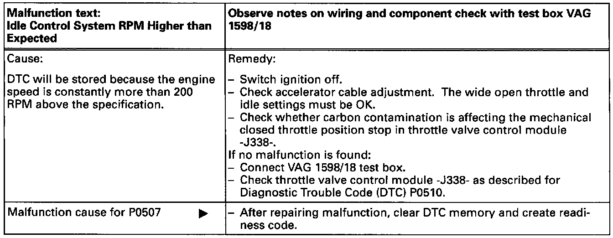

Operation CHARM
: Car repair manuals for everyone.
Home
>>
Volkswagen
>>
1997
>>
GTI (1H1) V6-2.8L (AAA)
>>
Repair and Diagnosis
>>
A L L Diagnostic Trouble Codes ( DTC )
>>
Testing and Inspection
>>
Manufacturer Code Charts
>>
Engine Control System
>>
DTC 16891
DTC 16891
